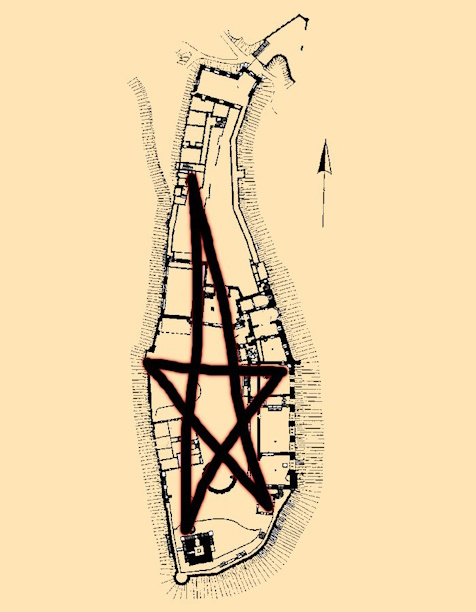

Index
Zwischen zwei Welten

| Datum: | 30.12.2023 |
|---|---|
| Spielleiter: | Julian |
| Thomas | |
| Teilnehmer: | Alexander Doppler | Emilia Brumm | George Brazos | Maximilian Lanzinger | Michael Reichelt | Roger Zimmermann | Rose |
| Veranstaltungsort: | Casa Thomas |
| Casa Dauner | |
| Spielzeit: | Donnerstag 10.11.1881 |
| Schauplätze: | Wartburg |
Prolog
Zur Feier der letzten Erfolge und zur Krönung der Lebensarbeit eines renommierten und ausgezeichneten Jägers werden die Helden auf die Wartburg nach Gotha Koburg eingeladen.
Da der Moment passend ist sollen ebenso neue Rekruten in die Reihen der Custodire Populum aufgenommen werden.
Doch die ruhigen Festivitäten werden durch die Rückkehr eines alten Feindes erheblich gestört. Können die Helden es schaffen diese mächtige Gruppierung zu stoppen und die Custodire zu retten?
Hauptteil
Am Vormittag eines Donnerstag, spezifisch der Jahrestag von Martin Luthers, treffen sich viele Kutschen und Wagen am Fuse des Berges der Burg. Unter einigen von diesen befinden sich die Helden, meist einzeln unterwegs, oder in einer Gruppe wie Alexander Doppler, Maximilian Lanzinger und Michael Reichelt. Langsam werden sie auf hölzernen Rädern über holprige Steine zum beeindruckenden Bauwerk getragen. Dort angekommen treten sie durch das erste Tor hinein in die Burg, weiter am Ritterhaus vorbei zur Torhalle. Dort werden sie von Tischen und Empfangspersonal begrüßt, welche sie mehr oder weniger höflich bieten ihre größeren Waffen abzugeben. Alle gehen diesem nach, wie Roger Zimmermann der sein Mauser Modell 71 in einer Tasche vorsichtig ablegt. Oder George Brazos seine beiden Colt Army Model 1860 abgibt. Nur die Juwelendiebin mit dem Codenamen Rose wird besonders genau untersucht, und bei ihr wird man auch fündig. Unter einer lauter Ansage wird ihr Baby Dragoon Revolver abgenommen und in einer Kiste verstaut.
Bereit für das Fest begeben sich die Helden mit den anderen Mitgliedern in die Feste und das Treppenhaus, von dort aus weiter an der Kapelle vorbei in den prunkvoll geschmückten Festsaal. Dort warteten schon einige Menschen in feierlichen Anzügen und Kleidern, Jäger, Informanten und Agenten gleichermaßen. Kaum mischten sich die Helden unter die Leute begann sogleich der Kammervorsitzende von Bayern, Erich Kreimler, ein dicklicher jedoch ebenso nobler Bankier, mit einer Rede:
Meine sehr geehrten Damen und Herren, mit voll Freude darf ich Ihnen heute Abend einen sehr besonderen Mann und einen guten Freund vorstellen. Er hat über sein ereignisreiches Leben hinweg Dinge gesehen, die auch Sie für unvorstellbar halten würden. Mit jungen Jahren hatte er begonnen das Böse zu jagen und hat bis jetzt nicht damit aufgehört. Wenn Sie ihn anschauen, denken Sie er wäre wahrlich 62? Seine größte Errungenschaft war es, den berüchtigten Kult "Jünger des Luzifer" vor 5 Jahren komplett zu zerschlagen. Mit seinen herausragenden Fähigkeiten in der Schwarzmagie und seiner außerordentlichen Stärke und Ausdauer vollbrachte er diese Tat auf eigener Faust. Ihm wollen wir heute den "Junker Jörg Preis" für absonderliche Taten für die Custodire Populum, und der Menschheit im Ganzen, verleihen und ihn für sein Leben ehren, so das er für immer in Erinnerung bleiben soll. Ich präsentiere Arthur Bowski!
Neben der flachen Bühne steht bereits ein imposanter Mann im grünen Anzug bereit, ein breites Lächeln aufgesetzt. Schon als der die kleine Treppe emporsteigt beginnt er mit leicht russischem Akzent unter tosendem Applaus:
Vielen Dank meine lieben Freunde. Ohne euch hätte ich dies alles wahrlich nicht geschafft. Ohne euch gäbe es keine Beschützer des Guten. Und weil ich weiß, dass ihr euch ohne mich in Zukunft gut zurecht kommt werde ich ab morgen meinen verdienten Ruhestand antreten. Macht euch um mich keine Sorgen, ich werde mich sehen lassen, nur nicht mehr heute!
Und schon verabschiedet er sich mit Winken und läuft in die Arme einer älteren aber hübschen Frau und zeiht diese durch die Menge in Richtung des Ausgangs. Schnell wird klar, dass noch einiges mehr geplant war, doch Arthur machte diesem einen Strich durch die Rechnung. Daher bittet Herr Kreimler den Kammervorstand von Mittelfranken, die am Gehstock unsicher gehende Frau Helene Berthold, die neuen Angehörigen der Custodire gebührend willkommen zu heißen und zu initiieren. Daher nimmt sich diese Michael Reichelt als Hilfe und geht zusammen mit diesem und Emilia Brumm, George Brazos und Rose hinunter in den Keller durch das zentrale Treppenhaus. Alexander, Maximilian und Roger bleiben im Festsaal zurück.
| Im Keller: | Im Festsaal: |
|---|---|
| Helene führt die Gruppe aus vier Helden die alten Stufen hinunter in eine noch kühlere Luft als im Burghof zu finden war. Weiter hindurch die geschmückten Decken des Elisabeth-Gewölbes zum Ritterbad. Nacheinander steigen die Helden in das Nass des Bades und bereiten sich auf die EInführung vor. Doch im Dunkeln scheint sich etwas zu regen, hinter den Säulen verhält sich jemand gar sehr auffällig. Dies fällt erst auf als Helene zur traditionellen Segnung ansetzt und von hinter einer Säule ein Wurfmesser hervor schnellt. Ein dürrer Mann in schwarzer Robe lässt sich blicken, doch vertreiben kann er die Helden nicht. Uneingeschüchtert nähern sie sich diesem bis er bemerkt in welcher aussichtslosen Situation befindet. Er flüchtet weiter in die Dunkelheit eines Ganges und man hört dort nur nach einem verzweifelten Schrei ein schmerzerfülltes Gurgeln und Husten. Bis ein stumpfer Fall Stille bringt. Der Mann hat sich selbst gerichtet. | Oberhalb erfahren die uns bekannten Custodire von Roger, dass dieser kein Mitglied sei. Nur ein Söldner, welcher seinen Verdienst mit dem Töten von Monster erhält und am liebsten ohne Bindung an Mensch oder Idee sein Leben leben will. Während des Preußisch-Französischen Krieges arbeitete er gegen beide Seiten, den Vampire hatten sich unter den Generälen beider Armeen breit gemacht. Nach langer Zeit der Erkundung und Überwachung gin er zur Arbeit. Mit Hilfe seines Scharfschützengewehr, Silber und sehr genauen Schüssen dezimierte er deren Nummern und brachte so Chaos in den Reihen der Truppen. Dies war sein erster Auftrag der Custodire, welche die Existenz dieser "Generäle" aus den Geschichtsbüchern tilgten. Auch unterhielten sie sich mit Herr Kreimler über die Custodire und Rogers Leben, während sie verschiedenste alkoholische Getränke probierten. Unter der Unterhaltung führt der beleibte Vorsitzende die Gruppe in Richtung Treppenhaus, er wolle ihnen etwas in der Kapelle passen zur Gespräch zeigen. |
In den jeweiligen Geschehnissen vertieft bringt das blendende Licht und die Druckwelle einer markerschütternden Explosion die Helden zu Fall. Ihr Gehör gestört von einem unangenehmen Fiepen und das Augenlicht für kurze Zeit geraubt durchdringt alle eine tiefe Verwirrung. Nur nach und nach kommen sie zur Besinnung und können sich orientieren.
| Im Keller: | Im Festsaal: |
|---|---|
| Nachdem die Helden sich über ihre eigene Situation klar geworden sind untersuchen sie das Geschehene. Schnell eilt die Gruppe in Richtung des Lärms und entdeckt dort ein eingestürztes Treppenhaus und erkennt, dass sie eingesperrt sind. Und zwar hinter Tonnen von Stein und Holz, der einzig bekannte Ausweg verwehrt. Wie sollen sie nun zu entkommen? Und was ist aus den anderen Mitgliedern geworden? Durch die Trümmer suchen sie nach nur einer Möglichkeit für die Kommunikation und finden diese durch eine Kakofonie an Geschrei und Flammen. Michael sieht dort die Augen eines vertrauten Gesichts! | Gott sei Dank unversehrt rappeln sich die Helden auf, sie hat es bedenklich schärfer erwischt. Müde auf seinen Händen abgestützt bemerkt Roger ein feuchtes Gefühl um seine Hände. Ein Fluss an Blut erstreckt sich von ihm zu einem Schädel, durchbohrt von einem Splinter aus Holz. Erich Kreimler liegt leblos mit einem Loch im Kopf auf seinem Rücken. Weitere Holz- und Steinstücke um sie herum verteilt. Nur Glück lies sie unverletzt aus dieser Situation entkommen. Eilig sammeln sie sich und haben eine Sache im Sinn: wo sind Michael und Helene? Im Keller, doch das Treppenhaus ist zerstört! Sie stolpern zu den Trümmern aus Stufen und finden dort einen kleinen Spalt, breit genug für eine Hand. Und hören von dort vertraute Stimmen! |
Wenigstens durch das Gespräch vereint tauschen sich die Gruppen aus. Unterhalb ist jeder unversehrt, doch gefunden hat man dort den unbekannten Mann. Oberhalb blicken die Helden sich um und sehen durch den Rauch Leichen und Verletzte, und Menschen die sich um diese kümmern. Es muss sich um einen Angriff oder Anschlag handeln, das klare Ziel sind die Custodire. Eines ist klar, man ruft zu den Waffen! Doch diese wurden abgegeben und sind zu finden. Und wer ist der Mann im Kapuzenumhang? Jeder hat etwas zu tun, also will man sich gleich wieder treffen.
| Im Keller: | Im Festsaal: |
|---|---|
| Die neuen Mitglieder begeben sich zurück zur Leiche, nur vorsichtiger als zuvor. Bei sich hat der Mann eine leicht zerkratzte Schiefertafel mit einem roten Pentagramm auf dessen Oberfläche. Was ist das nur für eine Substanz, fragt sich Michael und schleckt die "Farbe" ab. Er nimmt nur eine kleine Spitze und ist sich sicher, es handelt sich um Blut. Doch was hat es sonst noch auf sich? Auch fallen bei genauerer Betrachtung einige Tattoos auf der Haut des Mannes auf. Helene erkennt diese sofort, es handelt sich um einen Kultisten der Jünger des Luzifer. Hatte aber Arthur Bowski diese nicht ausgelöscht oder doch einige übersehen. Auch trägt er einen Plan der Wartburg mit einem darüber gezeichneten Pentagram. Eine Spitze sitzt auf dem Treppenhaus, eine andere über dem Ritterbad. Also gibt es wohl noch drei andere Bomben im Süden, Westen und Norden. Und bestimmt noch viel mehr Kultisten. Das müssen auch die anderen wissen, es geht also wieder zurück zum Geröllspalt. | Es müssen Waffen her, die drei eilen zur Torhalle und den dazugehörigen Kisten. Außen angekommen hört man von oben ein leichtes Pfeifen. Alexander blickt herauf und kann gerade noch einem herabfallenden Etwas entgehen. Mit einem lauten Krachen zerschellt ein menschlicher Körper auf dem Pflaster. Unerschreckt untersucht Roger den Sack an Fleisch, man erkennt nur noch das es sich um eine Frau handelte, alle Hilfe ist schon lange zu spät. Im Festsaal herrscht genauso großes Chaos, Tische und Kisten umgestoßen und die Letzteren entleert. Einige Waffen sind dort verstreut un man sammelt alles was man findet: Rogers Mauser Modell 71, Roses 1848 Baby Dragoon Revolver und einige Messer. Andere Waffen sind verschwunden, wie vom Erdboden verschluckt. Doch es ist nicht genug und Alexander versucht mehr zuu findet, bestimmt bei den anderen Custodire. Im zerstörten Treppenhaus treffen sie auf einen jungen Mann mit gepflegten Schnauzer, der sich als Carlo Barundi ausgibt. Er kümmert sich um die Verletzen und hat eine kleine Wache aufgestellt, alles mit einigen wenigen Waffen. Alexander kommt mit ihm aneinander, da Carlo sich weigert auch nur eine Waffe auszugeben. Man braucht sie alle |
| selbst. Ohne weiter zu kommen gibt man gegen den Sturkopf auf und geht dazu über die anderen auszurüsten. |
Sogleich gibt Alexander den Revolver und ein langes Messer durch die Lücke der Trümmer während Helene von den Kultisten und deren voraussichtlichen Plänen berichtet. Einig ist man sich, dass die Bomben laut dem Plan eher im Kellerbereich vorzufinden sein werden. Doch wie kann man diese entschärfen? Und sind die Kultisten die einzigen Gegner? Zu viele Fragen welche hier niemand beantworten kann, aber Arthur Bowski wird es mit Sicherheit können. Zuletzt sah man ihn Richtung Ausgang und Süden, also untersucht Gruppe Oben am Besten dort. Die Aufgaben aufgeteilt geht es wieder ans Werk.
| Im Keller: | Im Burghof: |
|---|---|
| Aufgrund der verwinkelten Gassen und dunklen Gängen beginnt Emilia mit dem Zeichnen einer hilfreichen Karte der Unterwelt. Mit spärlichen Licht und Vorsicht vor Überraschungsangriffen schleichen die Helden durch die feuchten Winkel. Georg fühlt sich als Bombenträger sicherer, doch Helene weigert sich das wichtige Gut abzugeben. Nicht dass jemand dieser wieder einmal einen Geschmackstest unterzieht. Geschwind schnappt er sich die Vorsitzende in seine Arme und hört nur einen Seufzer der Niederlage. Die Bombe nun in seinen Händen verpackt er sie sicher unter seinem Mantel. Rose schnappt sich hingegen eine Fackel aus dem Ritterbad und begibt sich durch den Raum und über die Leiche des Kultisten in die Katakomben. Nach einigen Metern und Kurven sieht man Licht, aber dieses Mal von Oben. Hoffend auf einen Ausweg sieht die Gruppe aber nur einen leichten Schein durch die erhöhten Gitter der Zisterne. Kein Ausgang, aber ein anderer Weg um mit den Oberen zu kommunizieren. Und prompt erkennt man nicht nur die Umrisse eines fliegenden Körpers sondern auch die Stimmen der anderen. | Außen eilen die Helden durch den Regen und können nur knapp den KLauen eines Flugwesens entgehen. Der Kult sind nicht alleine hier! Vor dem Ungewissen flüchtend rennen sie in das nächste Haus, mit der Aufschrift "Küchenhaus". Dort findet man Töpfe, Messer und Herde und es herrscht Ruhe und Dunkel, aber Maximilian erkennt Umrisse in den hinteren Ecken der Küche. Bevor eine der Gestalten ihr Beil an seine Kehle halten kann beginnt er mit beruhigenden Worten. Fünf der Küchenarbeiter haben sich nach der Explosion dort verschanzt. Als sie fliehen wollten wurden die erste Frau in die Lüfte gehoben und man floh wieder zurück ins Haus. Ohne Wissen über die Geschehnisse oder den Aufenthaltsort von Arthur Bowski rät man ihnen sich bedeckt zu halten und zum Südturm zu gehen. Jeder packt ein oder zwei Messer ein, sodass alle Helden genug bewaffnet ist. Vor der Tür schnappen sich Alexander und Maximilian eine Fackel, doch das von ihnen erzeugte Licht lockt nur wieder die Flugwesen an. Durch das geschulte Auge stellen sich diese als Teufel heraus! Zwar nur niedere Baatezu aber trotzdem ernstzunehmende Gegner. Kaum können die Helden sich hinter einer niedrigen Mauer wegducken werden die Fackeln geköpft und ihr Licht verschwindet als sie auf dem Boden auftreffen. Von hinter der Wand hört man die leisen Rufe von Menschen. |
Durch die Gitterstäbe sehen sich die Helden klar und können so Waffen und Worte tauschen. Es wird von den Teufeln und der Bombe erzählt und dem vermeintlichen Ort der Bombe und von Bowski, der Südturm. Vielleicht befindet sich dort auch ein Ausweg, aber zumindest Antworten.
| Im Keller: | Im Südturm: |
|---|---|
| George nutzt sein Wissen über Teufel und erklärt der Gruppe um was es sich bei Baatezus handelt, verstorbene Menschen und deren verdorbene Seelen, gebunden an die Hölle und dessen Herrschern, nur auf der Erde wandelnd nachdem sie durch ein Ritual beschworen wurden. Sie tun alles in ihrer Macht um die Welt ihre eigene zu machen, und wenn sie dabei zerstört wird umso besser. Langsam und schleichend bewegen die Helden sich über rutschige Steinplatten. Leise und unerklärliche Geräusche aus allen Richtungen zwingen zur Vorsicht. Wer weiß schon was sich im nächsten Gang befindet? Rose befindet sich an der Spitze der Gruppe und erreicht als erste eine Art Gefängniszelle unterhalb des Südturms, der flackernde Schein von Fackeln dringt durch die Gitterstäbe in der Decke. Fasziniert vom Licht blickt Rose nicht auf den Boden und übersieht die dünne Pfütze vor ihr. Ein unachtsamer Schritt und schlechte Balance führt zur Bekanntschaft des Bodens mit ihrem Gesäß. Der laute Schmerzensschrei ihrerseits weckt die Gegner, welche sich im von Fackeln beleuchteten Raum befinden. Schnell eilen diese zur Tür nach unten, doch werden unerwarteter Weiße überrascht. | Ebenfalls schleichend arbeiten sich die Helden der oberen Gruppe in den Turm und in den Fußstapfen von Roger eine alte und knapp knarzende Treppe hinauf zur Tür zum ersten Stock. Leicht öffnet er die Tür und lugt hindurch und erspäht den geflügelten Rücken eines Baatezu. Dieser redet auf andere Personen ein, die Stimmen zählend zwei weitere. Schnell wird ein Plan geschmiedet und sich positioniert, die Waffen in Hand oder Anschlag. Kaum führt Roger die Hand zum alten eisernen Türknauf durchbricht die Stille ein schreckliches Geräusch in Form eines unerhörten Schimpfworts und der Baatezu öffnet von selbst die besagte Tür. Es kommt zum Kampf. |
Aus nächster Nähe gibt Roger einen Schuß aus seinem Gewehr ab, welcher in dem Bauch des Baatezu blutig einschlägt. Einige Schritte zurück getrennt geht der Teufel auf die Knie. Gleich darauf springt Alexander in den Vordergrund und schlägt zwischen den Hörnern gewaltig zu, der Teufel taumelt und seine Augen drehen sich zurück in seinen Kopf. Maximilian ist ebenso schnell zur Stelle und sticht mit dem langen Messer zu. Während der Baatezu schon halb tot nach vorne gebeugt ist eilen zwei verzweifelt dreinblickende Kultisten um die Ecke und richten eine Pistole und eine fast vollkommen tätowierte und verdorrte Hand auf die Helden. Ein Schuß bricht, doch verfehlt Alexander um Haares breite. Während sich aus den Tattoos ein kleiner Feuerball bildet richtet Roger seine Waffe auf diese un drückt ab. Den Zauber unterbrechend durchschlägt die Kugel die Hand und der Kultist schreit schmerzerfüllt auf. Wieder am Zug betäubt Alexander den Baatezu weiter mit gezielten Schlägen und Maximilian greift sogleich den Pistolenschützen an mit wilden Stichen an. Den Teufel unter Kontrolle richtet Roger sein Visier auf die Kultisten und erkennt die perfekte Gelegenheit. Ein Schuß löst sich und beide Gegner sinken in einer Lache aus Blut zusammen. Bevor die Helden ihre Aufmerksamkeit auf den Letzten richten können werden sie von einem lauten KNall hinter ihnen erschreckt. Arthur Bowski blickt mit rauchender Pistole eine weitere Treppe herunter, mit ihm die fern bekannte Frau Dr. Steigmeier. Einen Baatezu sollte man nicht leben lasse, erklärt er, während er die Helden prüfend anblickt. Diese erklären ihm die Geschehnisse des Abends und den vermeintlichen PLan der Kultisten. Und sie sollen Recht haben, den Bowski stimmt allem zu und fühlt sich an den letzten Anschlag der Jünger erinnert. Er wird die Treppe herunter geführt um der anderen Gruppe vorstellig zu werden, den diese besitzen den Plan der Bösen. Doch nur Rogers Geld hat er nicht mit dabei.
| Im Keller: | Im Ritterhaus: |
|---|---|
| Angekommen in einem halb leeren und verstaubten und feuchten Lagerraum hört die untere Gruppe das Wimmern und Weinen einer weiblichen Stimme. Nicht aus diesem Raum sondern leicht stumm durch eine Tür. Rose findet über eine Treppe den Weg nach oben, doch dieser ist versperrt durch eine schwere Eisentür. Mit einer ihrer Haarklammern versucht sie diese zu öffnen und scheint schnell erfolgreich zu sein! Aber das Geräusch schreckt die Person hinter der Türe auf und leise kreischend schleppt sie etwas schweres auf den metallenen Ausgang. Nicht einmal die vereinte Stärke von Georg und Maximilian können sich dagegen stemmen. Über ihnen hören sie die Ankunft der anderen, bevor sie bitten können den Ausgang zu räumen erhalten sie den Hinweis auf einen sehr viel besseren weg. | Unter der Führung der Doktorin bewegen die Helden sich in Richtung des Küchenhauses, den dort ist nicht nur ein Weg nach unten, auch könnte sich hier eine Bombe befinden. So langsam wie es geht mit Bowski an erster Stelle geht es über den Hof bis zum nächsten Haus. Hoffend auf die freundlichen Worte des Personals öffnen sie eilig die Tür, man findet aber im Inneren nur blutige Überreste der sicher geglaubten Menschen. Die Augen seiner Begleitung bedeckend und mit beruhigenden Worten kümmert sich Arthur um die bestürzte Margarethe während die anderen nach Feinden Ausschau halten. Auf Geräusche aufmerksam entdecken sie die andere Gruppe unter ihnen. |
Die Gruppen treffen sich durch den kleinen Abfluss in der Küche und geben Bowski alle Informationen. Den Plan der fünf Bomben, die fast zum Auslößen geschleckte Bombe, das Tattoo der Kultisten. Genug um Bowskis volles Vertrauen zu gewinnen und ihm alle Details zu entlocken. Ihm wird eine Bombe durch den engen Spalt gereicht und kann mit diesen Worten und dem gleichzeitigen durchtrennen der Linien des Pentagrams diese entschärfen:
Ut dolor
a diaboli
finiatur nunc
ex homine
quis est iustus.
Möge das Leid
vom Teufel gesendet
jetzt beendet werden
von einer Person
die rechtschaffen ist.
Mit hilfreichen weiteren Tipps von Margarethe Steigmeier für den Grundriss der Burg und den letzten Ort der Bombe in den Katakomben. Auch gibt es den besten Weg sich zu treffen, in der Lutherstube im Ritterhaus. Dort wird sich sehr wahrscheinlich die nördliche Bombe befinden, allein weil die Jünger ihren Hass auf den Dämonentöter Martin Luther zeigen wollen. Margarethe erzählt von einem Geheimgang, welcher vom Keller aus erreicht werden kann. Falls die Kultisten davon wissen sollte dieser untersucht werden. Und so kommt mindestens eine Gruppe zum Ziel. Wieder trennt man sich, beide Gemeinschaften auf der Suche bevor weitere Explosionen die komplette Anlage zerstören können.
| Im Keller: | Im Ritterhaus: |
|---|---|
| Michael entschärft sogleich, sehr vorsichtig, die zweite Bombe und die Gruppe schreitet auf der Suche weiter voran. Laut Karte muss sie sich im Westen der Burg befinden, Emilia gibt den Weg mit ihrer Karte an. Selbst mit Fackel in der Hand bemerkt sie jedoch nicht die Gefahr hinter der nächsten Ecke. Denn kurz vor der nächsten Bombe wartet eine große und stämmige Kultistin wartend mit Hammer in der Hand. Den ersten wilden Schlag kann Emilia kaum ausweichen und der schwere Metallbrocken trifft sie an ihrer rechten Schulter. Schmerzerfüllt weicht sie zurück und macht Rose und ihrer Pistole aus, doch der Schuß geht knapp vorbei. Ein weiterer Schwung schlägt in die Brust von George ein, der nächste in Michaels Waffenhand. Die Überraschung ist groß und daher der Widerstand gering. Aber die Helden können sich langsam fassen und geben mit Messern kontra. Ein hin und her endet mit Emilia am Boden und Rose mit dem perfekten Schuss, der der blutigen Kultistin ein Loch zwischen ihren AUgen öffnet. Die Gefahr gebannt macht sich Emilia an die Verarztung der Verletzten während George die Bombe an der Decke vor dem vergitterten Ausgang des Tunnels findet. Michael macht sich sogleich an die Entschärfung der Bombe und ist mit zittriger Hand trotzdem erfolgreich. Weiter geht es zum Geheimgang in der Lutherstube. Eine schmale Wendeltreppe führt mit winzigen Schritten nach oben und ein schwacher Luftzug schwimmt über die Haut der Helden. Endlich ist ein wahrer Ausgang in Sicht! Nur sieht man am Ende der Treppe nur einen kleinen Raum aus Stein und Holz vor sich, mit keinem Hinweis auf einen Türgriff, geschweige den eine Tür. Rose versucht wieder ihr Glück und Tastet mit den Händen an den kalten Ritzen der Fassade entlang, findet auch den Ursprung des Luftzugs. Doch der Spalt ist viel zu eng um ihn aufzuhebeln und mit purer KRaft kommt man auch nicht voran. So müssen die Kellerkinder sich in Geduld üben und auf die andere Gruppe warten. | Schnell über den Platz in der Burg unter das Torhaus führt Margarethe die Gruppe in das Ritterhaus. Mit dem geplünderten Revolver eines Kultisten im Anschlag öffnet Roger nach und nach die Türen. Durch einen großen Essenssaal kommen die Helden in einem kleinen Treppenhaus an und von dort ein Stockwerk höher auf den Gängen der Burgmauer. Wieder an der frischen Luft eilen sie zur nächsten Tür, doch in dieser schweren Holztür ist ein ebenso schweres Schloss angebracht. Sogleich geht Alexander mit seinen feinen Werkzeugen an die Arbeit und beginnt im Inneren des Schlosses zu stochern. Auch wenn die Helden einen Kreis rund um Margarethe bilden ist der Angriff von zwei fliegenden Teufeln leicht unerwartet. Deren scharfe Klauen schneiden durch Maximilians Lieblingsmantel und verfehlen Roger nur knapp. Dieser und Bowski geben jeweils einen Schuss ab, verjagen können sie die Angreifer aber nicht. Ein weiteren Sturzflug zerstört den Mantel weiter und schneidet gleichzeitig ins Fleisch des Trägers und Alexanders. Dieser kann dennoch den letzten Stifte des Schließzylinders in die richtige Position bringen und das Schloss springt auf. Die zwei letzten Schüsse drängen die Flieger lange genug zurück um alle Menschen durch das Tor zu scheuchen. Mit einem lauten Krachen schlägt Bowski die Tür zu und ein Kratzen und Schaben dringt nach innen, aber ein umgeworfener Tisch löst das Problem für den Moment. Nur einen kurzen Gang weiter und Margarethe rennt in ein Austellungszimmer mit einer Schreibbank unter einem schwarzen Tintenfleck. Sie nimmt die Feder neben dem Tintenfass auf und hält deren Spitze an den Tintenfleck an der Wand. Ein kurzer Lichtblitz und der Stein schiebt sich zur Seite und lässt einen Fackelschein aus der Dunkelheit erkennen. Ungläubige Augen aus beiden Richtungen sehen sich erleichtert an und beide Gruppen sind nun endlich vereint. Doch durch den Eingang in das Ritterhaus hört man schwere Schritte und schon taucht ein mächtiger Baatezu gebückt durch die Tür zur Stube auf. |
Zuerst ein Lächeln und sogleich danach ein brutaler Schrei und der Baatezu geht zum Angriff über. Mit seiner überragenden Stärke wirft er Michael und Maximilian zur Seite während hinter dem Teufel zwei weitere durch den Gang fliegen. Aufgrund der Enge des Raumes schafft es aber einer nicht hindurch und bleibt mit seinem Flügel hängen, der andere schlägt wild auf Emilia ein. Mit konzentrierten Feuer zwingen die Helden den großen Baatezu zur Verteidigung, welcher aber trotzdem mit seiner Magie Bowski versteinern kann. Um die Waage noch weiter auszugleichen kommen einige Sekunden später auch noch zwei Kultisten zum Vorschein, bewaffnet mit Lasso und Schrotflinte. Des Schießens müde wirft Rose ihren Baby Dragoon Revolver zu George und zückt einen Angelhaken, welchen sie mit großer Wucht in das linke Auge des mächtigen Baatezus, während fast gleichzeitig Emilia ihr Messer in in die Orbita des rechten rammt. Den Fluch auf Bowski getroffen erblickt dieser die Szene, als Maximilian vom Lasso gefangen wird, Emilia und Alexander blutig geschlagen werden und Michael sich gegen einen anderen Baatezu stemmt. Bevor der Mächtige sich aus seiner Trance heben kann und die Menschen vor ihm vernichtet zieht Bowski blitzschnell seinen Revolver und jagt sogleich in einer Sekunde seine sechs Kugeln in den Oberkörper des nun im Stehen sterbenden Teufel. Zum Erstaunen aller stirbt dieser aber keinen normalen Tod, sondern ein feuriges Pentagram öffnet sich unter dessen klauenbesetzten Füßen und er sinkt zurück in die heiße Höhle aus der er stammt. Alexander schneidet direkt darauf die Fesseln von Maximilian durch und sticht mit ihm und Emilia und Michael in die Baatezus ein. Aus purer Verzweiflung über den Tod ihrer Herren gehen die Kultisten an ihr Äußerstes. Eine Ladung Schritt zwingt Emilia und Alexander auf die Knie, bestückt mit blutigen Wunden. Sich von Kleidung befreit zeigt der andere Teufelsbeschwörer seinen muskulösen und stark tätowierten Körper. Nur Bowski erkennt die imminente Gefahr, den die Tattoos sind nur zu ähnlich wie die Pentagramme auf den Bomben. Mit fast aufgebrauchter Kraft wirft er seinen Körper gegen den anstürmenden Mann und hält diesen fest. Bevor er aber alle anderen zur Flucht bringen will schlagen in den Kultisten tödliche Schüsse von George und Roger ein. Den Toten immer noch umarmend entschärft Bowski dessen körperliche Bombe als er diesen fast schon sanft zu Boden legt. Alle Gegner sind besiegt und es dringt zur Erschöpfung aller eine unendliche Stille in die legendäre Lutherstube ein. Die Gefahr ist gebannt und der Tag ist endlich vorbei.
Epilog
Mit gebrochenen Knochen und blutigen Wunden stolpern die Helden zurück in den großen Festsaal. Dort werden sie von bewaffneten Mitgliedern der Custodire willkommen geheißen. Erschöpft stürzen die Helden zu Boden und lassen sich von anderen verbinden. Carlo Brundi, der die Führung soweit übernommen hatte, erklärt, dass alle Gegner besiegt worden konnten und die Burg nun wieder sicher ist. Doch alles auf Kosten von von einer zweistelligen Anzahl an Custodire und vielen Menschen des Personals. Manche Bereiche nun führungslos oder Städte nicht mehr besetzt muss die Custodire jetzt von der Verteidigung zum Angriff übergehen. Die Jünger des Luzifer sind zurück, oder waren nie weg. Und Arthur Bowski wird sie wieder jagen, bis nun wirklich kein Überbleibsel ihres Einflusses mehr übrig bleibt.
Helene Berthold ersetzt Erich Kreimler als den Kammervorsitzenden von Bayern. Der mittelfränkische Vorsitzende muss noch gewählt werden. Die Verletzungen der Helden verheilen in wenigen Tagen, doch sollen diese überraschenden Ereignisse Narben in der Seele zurück. Carlo wir aufgrund seiner Initiative im gleichen Mund wie die Helden genannt und die Aufträge sollen nun an Intensität zunehmen.
Inventar
Roger:
- 1x M1879 Reichsrevolver von einem Kultisten im Südturm
- 1x Zwillingsflinte von einem Kultisten im Lutherzimmer
Trivia
- Alexander hämmert einen Gegner bis in den ewigen Schlaf
- Maximilians Mantel wurde mehrfach zerledert
- Roger schafft einen One Shot D-D-D-Doublekill
- Michael schleckt die Gruppe fast in ein verfrühtes Ende
- Rose angelt sich einen Teufel